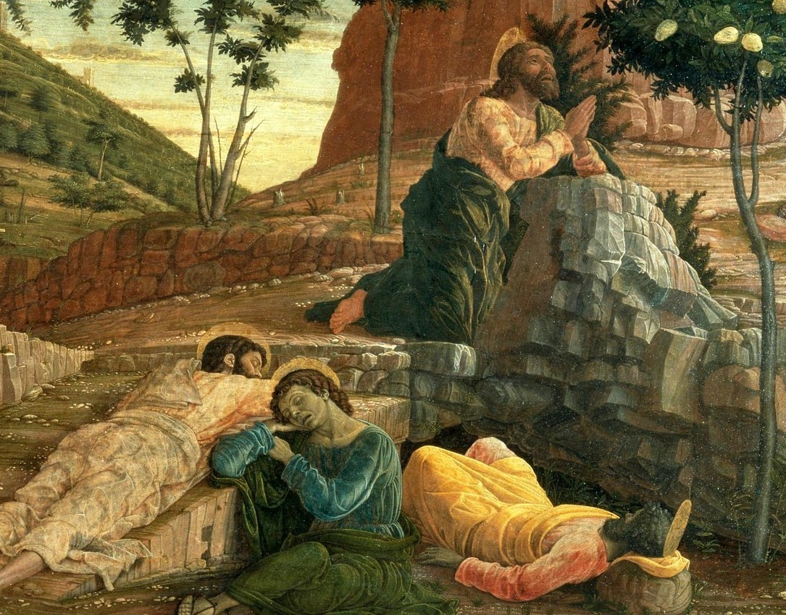
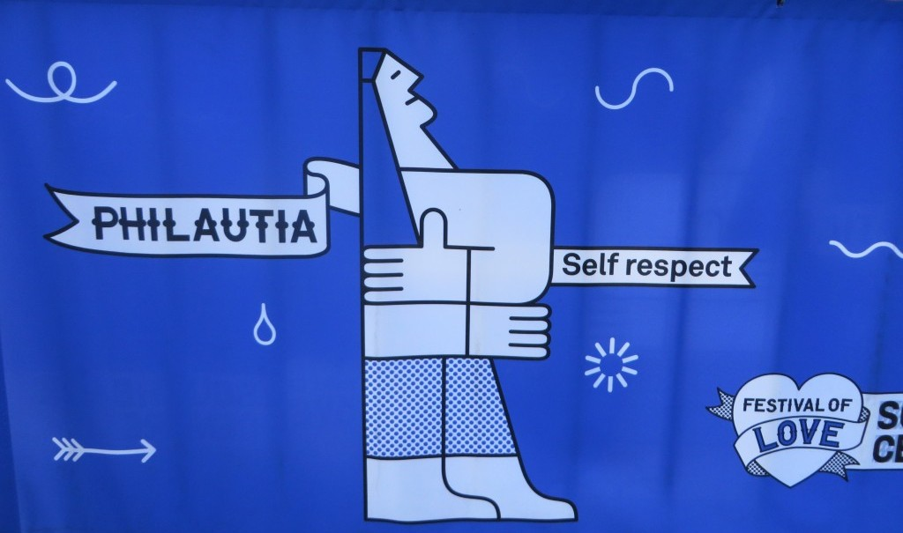

chapter6.2--handout
Background Information
Live by the sword, die by the sword 凡动刀者，必死于刀下
"Well, I suppose that we that live by the sword shall perish by the sword. Isn't that literary, though? You want to remember that for your next book, Robert."（“依我看，凡动刀的必死于刀下。这不是文学语言吗？你写第二本书的时候，别忘了把这个写进去，罗伯特。”）
Frances对着Cohn讽刺了一番，而且自嘲说正是因为自己当初是通过强逼的方式得到Cohn并且让他抛弃了他的小秘书 ，所以今天Cohn用一样的方式抛弃了她。这里的that (who) live by the sword shall perish by the sword现在已经成为一句很日常的俚语表达，意思就和我们说“遭报应”很像，但它的来源其实是《圣经》里的一个故事，在《约翰福音》里有记载——

当时的耶稣和使徒在客西马尼园（Garden of Gethsemane）祷告，其中一位使徒（disciple）就是彼得（Peter）. 犹大（Judas）在出卖耶稣的藏身之地后，罗马士兵便赶来要逮捕耶稣。彼得为了保护耶稣 ，便拔刀割下了大祭司（the high priest）仆人的一只耳朵。
这时候耶稣制止了彼得有进一步的危险举动，让他赶紧收刀入鞘，不要再发生流人血的事（Jesus rebuked Peter and put a quick stop to the bloodshed）. 随后耶稣奇迹般的使那个人的耳朵复原并痊愈了。在这后，他就对彼得说了这句“all who draw the sword will die by the sword”.
耶稣想告诫彼得的其实就是，不要用暴力解决暴力（Violence begets violence, but don't end violence） ，否则最后也要自食其果（如果不是耶稣及时阻止，而彼得真的动刀杀了人的话，他也会被逮捕）。
Vocabulary
alimony
n.（离婚或分居后在诉讼期间男方给女方的）赡养费，生活费
原文： "I could have had alimony, but I got the divorce the quickest way."
“我本来可以得到一笔赡养费的，但是我用了最快的方式办理离婚手续。”
💧alimony 表示“（离婚后的）赡养费”，在美国一般是说maintenance. maintain有“维持，维护”的意思，所以maintenance就表示维持正常生活所需要的一笔费用。比如：
They have to find the fathers who abandon their children and make them pay maintenance.
他们必须找到那些抛弃子女的父亲，让他们支付抚养费。
impulse
n. 凭冲动行事；突如其来的念头
原文：Here it was, all going on right before me, and I did not even feel an impulse to try and stop it.
真的，我亲眼看见的，而且我一点也没想去阻拦。
💧impulse 表示“冲动，突然的欲望”（a sudden strong desire），相当于urge, 所以feel an impulse to do也可以换成feel an urge to do. 我们平时说的“冲动购物”也可以用到这个词：impulse buying/shopping.
💧这个词还有一个非常好用的表达：on impulse “心血来潮，一时兴起”，也可以用on a whim来替换：
On impulse, I picked up the phone and rang her.
一时心血来潮，我拿起电话打给她。
Crush Your Problems
1、"We were going to celebrate so, and instead we've just had scenes. It's so childish..."
“我们正要准备庆祝一番，可是结果我们却大吵大闹。真如同儿戏……”
💧表达精讲
have scenes 表示“当众吵闹”的意思，我们在前面盖茨比的学习里（可以回看第24天讲义的彩蛋部分）还拓展了scene的各种俚语表达，这里再复习一下：
behind the scenes 幕后
not one's scene 不感兴趣/不擅长
arrive on the scene 到达现场/问世、诞生
heavy scene 沉重的、难以直面的场景
have a change of scene 换（工作/生活）场景
2、Robert's sending me.
罗伯特要打发我。
💧表达精讲
send 在这里不是“送某人去某地”，而是一种带有不满和敷衍的“打发”。还有语气更重的一个表达：send sb packing 表示“撵走，让某人收拾东西走人”，比如：After his four years as governor, the voters sent him packing.（他当了四年州长之后，选民叫他滚蛋了。）
这里再为大家拓展send的一个用法：send sb/sth into (doing) sth. 后面一般加表示状态或情绪的名词，比如send sb into panic就是“使某人陷入惊慌”，send the country plunging into anarchy “使这个国家陷入混乱/无政府状态中”（plunge into表示“陷入”）。
3、I'm going to England without a protest. 我要毫无怨言地到英国去。
💧表达精讲
protest 一般指“抗议”，尤其是公开或群众性的，比如：Students held a protest march against the war.（学生举行了反战抗议游行。）
这里protest指“反对”，without protest也就是“一声不吭，毫无怨言”。相反，如果想表示“不情不愿，满腹怨言”就可以说do sth under protest. 比如：The bill was eventually paid under protest.（最后很不情愿地结了账。）
4、"You're thirty-four. Still, I suppose that is young for a great writer. Look at Hardy. Look at Anatole France. He just died a little while ago. "
“你三十四岁了。话说回来，我看要当一个大文豪，依你的岁数还太年轻了。你瞧瞧哈代。再瞧瞧前不久才去世的阿纳托尔·法郎士。”
💧知识拓展
①Hardy指英国维多利亚时代的小说家Thomas Hardy（托马斯·哈代）（1840-1928），著名作品有《德伯家的苔丝》以及《无名的裘德》等；
②Anatole France（阿纳托尔·法朗士）（1844-1924）是法国著名作家及诺贝尔文学奖得主。
这两位作家除了都是大文豪以外，活过的岁数也都很大，所以Frances在这里用他们来讽刺Cohn如果要靠成为作家出头，还得再熬不知道多少日子。
5、They've sent it to me / in a vision / in the Café Select. Isn't it mystic? Some day they'll put a tablet up. Like at Lourdes.
有一次在雅士咖啡馆，恍惚之间我看到了启示。你说稀奇不稀奇？有一天人家会挂上一块铜牌的。就像在卢尔德城一样。
💧表达精讲
①in a vision 指“通过异象”；在宗教中，人们相信自己会经历异象，而且异象多半都是和上帝、耶稣或者是先知之类的角色，比如：She had a vision in which Jesus appeared before her.（她见到了耶稣现身自己面前的异象。）
②put a tablet on “立碑”；这里Frances是指人们会为她在这里曾经遇见异象而立碑纪念；
💧知识拓展
Lourdes（卢尔德城）是法国南部比利牛斯山麓的一座小城，位于法国南部接近西班牙边界的波河（Gave de Pau）的岸边。据说在1858年，14岁的牧羊少女贝尔娜岱特（Bernadette）在一山洞前遇见圣母玛利亚显灵，并且指引她挖开洞穴旁边的地面，得到了有神奇治愈能力的泉水。这个地方后来也成为了天主教徒的朝圣圣地。
Content Analysis
Frances向Jake哭诉Cohn如何不愿意娶她，她怀疑Cohn就是为了能回到纽约，等他的书出版后就能吸引来一大群年轻女孩的仰慕（"He wants to go back to New York alone, and be there when his book comes out so when a lot of little chickens like it. That's what he wants."）
但Frances对Cohn的“言语霸凌”还不止于此，甚至到了Jake都觉得难以忍受的地步，更让Jake惊讶的是Cohn的无动于衷，他丝毫没有为自己辩解——
💧Clue 1: Frances insults Cohn, but he doesn't stand up for himself.
Evidence 1: I do not know how people could say such terrible things to Robert Cohn. There are people to whom you could not say insulting things...But here was Cohn taking it all.
我不明白怎么能当着科恩的面说得这么吓人。往往有这样的人，听不得刻薄话。你一说刻薄话，他们就会暴跳如雷，好像当场天就会塌下来……但是科恩却乖乖地听着。
Evidence 2: Cohn looked up as I went in. His face was white. Why did he sit there? Why did he keep on taking it like that?
我走进酒吧间的时候，科恩抬头看着。他脸色煞白。他为什么还坐在那里不走？为什么继续那样受她的数落？
这里再一次展现了Cohn在两性关系中的自卑感，对自我认知的摇摆不定导致他只能受控于Frances. 虽然他从纽约回来后曾经“风光”过一段时间，觉得自己的确拥有吸引女人的魅力，但在重新回归到巴黎的平凡生活中后，这种自信逐渐消退，Cohn又开始变得小心翼翼起来。比如他对Frances的迁就和忍耐："Tell her to go to hell." "I can't. I've got certain obligations to her." — Chapter 5（“告诉她让她见鬼去吧。” “我不能这么做，我对她有责任的。”）
也正是因为这种懦弱性，Cohn在感情里也从来不是一个忠诚的投入者——
💧Clue 2: Cohn has little devotion to romance.
Evidence 1: "So I made him get rid of her, and he had brought her to Provincetown from Carmel when he moved the magazine, and he didn't even pay her fare back to the coast. All to please me."
“所以我就叫他把她打发走。当初杂志社迁移的时候，他把她从卡默尔带到了普罗文斯敦，可这时他连回西海岸的旅费也不给她。这一切都是为了讨好我。”
Evidence 2: "Why, you see, Robert's always wanted to have a mistress, and if he doesn't marry me, why, then he's had one...And if he marries me, like he's always promised he would, that would be the end of all the romance."
“哦，你知道，罗伯特一直想有个情妇，如果他不跟我结婚，哼，那么他就有我这个情妇……一旦他和我结婚了，正如他经常答应的那样，那么他的整个浪漫史也就告终了。”
Frances口中的Cohn就是那种只会空口承诺但从来不愿意跟你结婚的男人。其实根据Cohn之前的经历也不难看出他在感情中缺乏忠诚和投入。比如他认识Frances的时候正和自己的秘书暧昧，在杂志社迁址的时候还一起带上了她，但当他遇到更风采迷人的Frances后，便把对方撵走了，甚至连回去的旅费都不愿意付。因此当这一次他又陷入了对Brett的迷恋时，他就以自己要去收集写作素材为由离开Frances.
Cohn这个角色有可怜但也有可恨之处，所以Jake对他一直缺乏好感，也就不奇怪他虽然感觉Frances的刻薄话未免太过分，但也没有想要去劝阻的冲动（Here it was, all going on right before me, and I did not even feel an impulse to try and stop it.）
Today's Bonus
💧古希腊人眼里爱的七种形式
"You mustn't misunderstand, Jake, it was absolutely platonic with the secretary."（“你千万别误解，杰克，和女秘书的关系纯属精神恋爱。”）
Frances在这里讽刺Cohn和女秘书之间只是“柏拉图式恋爱”，也就是精神恋爱，所以他在遇到风姿绰约的Frances后便把女秘书抛弃了。
“柏拉图式恋爱”（Platonic love）并不是柏拉图自己创造出来的名词，而是后人Marsilio Ficino在15世纪的时候提出来的。最早柏拉图对这种“恋爱关系”的解释是在哲学层面上的，也就是两个人在逐渐超越肉体上的吸引（carnal attraction）并在灵魂上更为亲密的过程中，同时也更接近智慧和真理，直到最后两个人在真理中合而为一。在当时，这种恋爱关系区别于“浪漫式恋爱”（Romantic love）而存在。

后来“柏拉图式恋爱”在演变中有了更具体的分支，也就是“爱的七种形式”，包括“厄洛斯之爱”（Eros）、“菲莉亚之爱”（Philia）、“思多奇之爱”（Storge）、“阿加普之爱”（Agape）、“卢多斯之爱”（Ludus）、“普拉玛之爱”（Pragma）和“腓利塔之爱”（Philautia）. 那么这七种爱都有什么形式和要义呢？我们分别来看看~
厄洛斯之爱 Eros love
厄洛斯是希腊中掌管爱和性欲的神（the Greek God of sensual love and desire）. 这个神在罗马神话中对应的就是丘比特（Cupid）啦~
在《神谱》中赫西俄德是这样描述厄洛斯神的：“永生神中数他最美，他使全身酥麻，让所有神和人思谋和才智尽失在心怀深处。”据说他会在没有警告的情况下向凡人和神仙射出金箭。希腊人最怕那种爱，因为它是危险的，能使他们陷入最麻烦的境地。
所以“厄洛斯之爱”就是肉体的、情欲的爱。
菲莉亚之爱 Philia love
Philia love通常也会写作Brotherly love, 也就是“兄弟之爱”。而在亚里士多德的著作中，Philia则通常被翻译为friendship或affection.
亚里士多德还列举出了所有可以被称之为Philia的关系，比如：“年轻恋人”（young lovers）、“终生挚友”（lifelong friends）、“政治或生意上的关系”（political or business contacts）、“同行的航海员”（fellow-voyagers）、“战友”（fellow-soldiers）、“同一个宗教组织里的教友”（members of the same religious society）.
简单来说，Philia就是包含着真诚、友好以及信任的关系，可以是合作或是相互依赖的形式（the type of love that is directed towards friendship or goodwill, often is met with mutual benefits that can also can be formed by companionship, dependability, and trust）. 所以Philia love可以理解为“兄弟/朋友/同僚之爱”。
思多奇之爱 Storge love
Storge love也可以翻译为familial love, 也就是“家庭/父母之爱”，一般是指“自然而生的，或是由于本能而产生的好感”（natural or instinctual affection）.
并且Storge love之中还有很重要的一条准则，也就是这种爱是单边的（unilateral）, 也就是不需要依靠互利（mutual benefit）而存在。这一点和我们上面提到的Philia love很不同。
阿加普之爱 Agape love
Agape love被认为是最高形式的爱（"the highest form of love, charity"）, 它还代表了人和上帝之间的爱（"the love of God for man and of man for God"）. 这种爱具有普世性（universal），可以是对陌生人的，或是对于自然万物的，含义非常广泛。
因此Agape love也就是“无私、奉献、无条件之爱”（selfless, sacrificial, unconditional）.
卢多斯之爱 Ludus love
Ludus来自拉丁文lusus, 最早的含义和"play, game,sport, training"相关。所以Ludus love倾向于指“玩伴、挑逗或揶揄之爱”（a playful and uncommitted love）, 这种爱不需要承诺，一般以玩乐为目的（focuses for fun）. 或者其中一方将另一方视为自己的“俘虏”（conquest）, 占有优势地位。
普拉玛之爱 Pragma love
Pragma love被认为是最实际的一种爱（the most practical）, 一般基于责任和理性（duty and reason）以及长期的利益（longer tern interests）, 不需要有所谓的“浪漫感觉”（romantic affection）.
在Pragma love之中，双方都有强烈的为对方服务的意识（an intense notion of being of service）, 并且希望在彼此身上找到价值（to find value in their partners）, 同时共同努力完成目标（to work with their partner to reach a common goal）. 这种爱一般也是最为长久并且稳固的。
腓利塔之爱 Philautia love
Philautia love也叫作self-love, 也就是自我之爱。起初这种爱被看作是一种品格上的缺陷（a moral flaw）, 类比于虚荣（vanity）和自私（selfishness）. 在韦伯斯特词典中，Philautia love被定义为“只考虑自己的开心和利益”（to regard for one's own happiness or advantage）.

但是随着时代发展，Philautia love开始有了更多积极的意义（throughout the centuries this definition has adopted a more positive connotation）, 比如在嬉皮时代（the Hippie era）, 人们开始弘扬这种自我之爱；以及新时代的女权主义运动在心理健康意识上的提升，也延伸出了对自我之爱的关注。也十分强调自我之爱在增进心理健康中的作用。